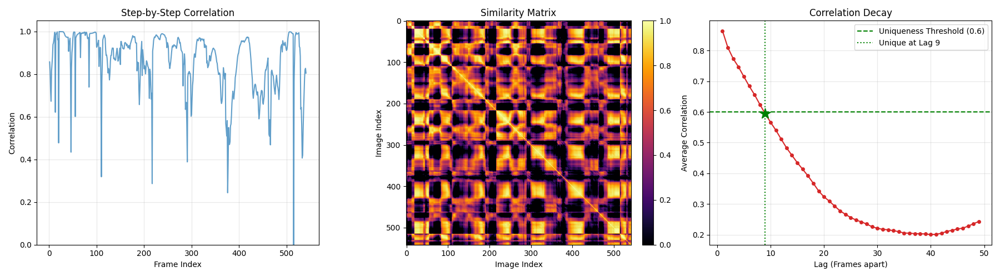

This section details the initial steps taken to process the raw thermal imagery dataset and prepare it for model training.
The data preparation is handled by the prepare_data.py script, which has two main steps: annotation parsing and dataset splitting.
data_utils/data_formatter.py)The raw CSV annotations are parsed to create a unified, structured list of records.
positive_images/, negative_images/).(x, y, width, height) format to the standard of (xmin, ymin, xmax, ymax). All waterfowl are assigned category_id: 1 and category_name: 'waterfowl'.has_objects: False.formatted_annotations.pkl file which contains all image records, including positive and negative examples, saved to.data_utils/data_splitter.py)The complete dataset is split into non-overlapping Training, Validation, and Test subsets.
RANDOM_SEED = 42 is used to ensure the split is reproducible.split_dataset/ directory:
split_dataset/train_ids.txtsplit_dataset/val_ids.txtsplit_dataset/test_ids.txtTo run the data preparation pipeline, execute:
python prepare_data.py
This will generate the formatted_annotations.pkl file and the ID lists in the split_dataset/ folder.
This section details the image preprocessing and data augmentation pipeline implemented in the calculate_dataset_stats.py and data_augmentation.py script.
The script calculate_dataset_stats.py first calculates the mean($\mu$) and standard deviation($\sigma$) on the training subset.
The get_transform(train=true) function defines a pipeline using the albumentations library, applying various transformations to both the image and the corresponding bounding boxes.
| Transformation | Type | Details |
|---|---|---|
| A.Affine | Geometric | $p=0.7$, scale=$(0.8, 1.2)$, rotate=$(\pm 10^\circ)$ |
| A.RandomResizedCrop | Geometric | $p=0.5$, size=($640 X 640$) |
| A.HorizontalFlip | Geometric | $p=0.5$ |
| A.VerticalFlip | Geometric | $p=0.2$ |
| A.RandomBrightnessContrast | Intensity | $p=0.5$, limit=$\pm 0.3$ |
| A.GaussNoise & Blur | Noise | $p=0.3$ and $p=0.2$ respectively |
| A.Normalize | Normalization | $\mu=0.4112, \sigma=0.1479$ |
The get_transform(train=False) function applies only the deterministic transformations: Resizing to $640X640$, followed by the same Normalization and Tensor Conversion steps. No random augmentations are used in the evaluation pipeline.
The data_aug_vis.py script, which imports the defined transformations from data_pipeline.py, allows for visual verification of the augmentation process. It randomly selects an image from the training set and displays the original image alongside several examples of augmented outputs, ensuring that bounding boxes are correctly transformed and maintained.
The object detection task is implemented using a two-stage detection framework.
FastRCNNPredictor) is replaced to accommodate our single target class plus the background class, resulting in 2 classes in total.The training pipeline is configured using the following core parameters defined in the configuration files:
| Parameter | Value | Description |
|---|---|---|
| Device | cuda (if available) / cpu | Utilizes GPU acceleration for training if a CUDA-enabled device is found. |
| Batch Size | 4 | Number of images processed per training step. |
| Number of Epochs | 10 | The total number of passes over the entire training dataset. |
| Optimizer | Stochastic Gradient Descent (SGD) | Used for gradient optimization. |
| Base Learning Rate (LR) | 0.005 | The initial learning rate. |
| Momentum | 0.9 | Helps accelerate SGD in the relevant direction and dampens oscillations. |
| Weight Decay | 0.0005 | $L_2$ regularization applied to weights to prevent overfitting. |
| LR Scheduler | StepLR | The learning rate is dropped by a factor of 0.1 (LR_GAMMA) every 5 epochs (LR_STEP_SIZE). |
| Log Frequency | 25 steps | Frequency for reporting training loss and performance statistics. |
The main training loop is implemented in the primary script:train.py, utilizing the configured model and data utilities to manage the training flow, evaluation, and storage of results.
The WaterfowlDataset class in data_utils/dataset_class.py handles the retrieval of image data and corresponding annotations:
formatted_annotations.pkl) and filters the records based on the supplied split IDs (train, val, or test).data_augmentation.py.The training process is as follows:
torchmetrics library. This provides an objective measure of detection quality (both localization and classification accuracy)._best.pth checkpoint is maintained, storing the model state that achieved the highest validation mAP to date, ensuring the best performing model is always preserved.The trained Faster R-CNN model was evaluated on the Test set (15% of the data) using standard object detection metrics, focusing on Mean Average Precision (mAP).
Checkpoint Download: Best Model Checkpoint
The evaluation was performed using the best model checkpoint saved based on validation mAP.
| Metric | Value | IoU Range | Interpretation |
|---|---|---|---|
| mAP (IoU=0.50:0.95) | 0.451 | Averaged over $[0.50, 0.95]$ | The strictest measure, reflecting overall accuracy and precise localization. |
| mAP@50 (IoU=0.50) | 0.869 | At IoU $\ge 0.50$ | Measures good detection of object presence and approximate location. |
| mAP@75 (IoU=0.75) | 0.394 | At IoU $\ge 0.75$ | Measures highly accurate object localization. |
| Max Recall (MAR@100) | 0.520 | Maximum recall with 100 detections/image | The highest achievable recall (True Positive Rate). |
The model demonstrates strong capability in identifying the presence and approximate location of waterfowl, evidenced by the high mAP@50 score of 0.869. This score suggests that when the model reports a bird, the bounding box overlaps the ground truth by at least 50% most of the time.
However, the significant performance drop from $\text{mAP}@50$ to the overall mAP (0.451) and mAP@75 (0.394) indicates a weakness in precise localization. The model struggles to place the bounding box accurately at strict IoU thresholds.The Max Recall (0.520) confirms that even with relaxed scoring, the model only successfully finds about half of all the waterfowl present in the test set, indicating that many small or faint thermal targets are being missed (False Negatives).
| Aspect | Discussion |
|---|---|
| Strengths of Thermal Imagery | Detection against Camouflage: Thermal signatures are highly effective for wildlife detection as they isolate the animal's heat signature from the background (water, vegetation), overcoming challenges like camouflage in RGB images.Night/Low Light Operation: Thermal cameras operate independently of visible light, enabling continuous monitoring across all times of day and night. |
| Weaknesses of Thermal Imagery | Lack of Textural Detail: Thermal images lack the fine texture and visual context of RGB, making species differentiation or individual identification difficult. Environmental Interference: Reflections on water, objects heated by the sun, or localized hot spots can generate false positives (False Detections) or interfere with the true thermal signature. |
The error analysis pipeline(vis_and_err_analysis/error_analysis.py) identifies and samples images representing three key detection outcomes: True Positives (TP), False Negatives (FN), and False Positives (FP).


Thiese image represents the model's general performance, where most waterfowl are successfully identified. The model predictions (Red boxes) align well with the ground truth (Green boxes), demonstrating good overall object localization. The high $\text{mAP}@50$ (0.869) seen in the evaluation results is supported by these cases.

In this image, the model missed most of the ground truth waterfowl (Green boxes). Only two objects: in the bottom left corner and top right corner were detected. The primary cause of FNs is likely the low contrast of distant or small thermal targets against the background.


These image shows multiple instances where the model predicted a waterfowls in an area that contains no ground truth. The area is dominated by high-thermal-signature textured regions.
The script vis_and_err_analysis/plots.py analyzes the training process using plots generated from the per-epoch training history, which provides insight into convergence and the effect of the learning rate schedule.
The plot below shows the training loss (blue line, left axis) and the validation mAP (red dashed line, right axis) across 20 training epochs.

The learning rate plot confirms the application of the StepLR scheduler, which is designed to help the model escape local minima and stabilize training after initial feature learning.

To investigate the discrepancy between high precision and moderate recall, a supplementary autocorrelation analysis was performed to quantify the temporal redundancy inherent in the sequential dataset.
